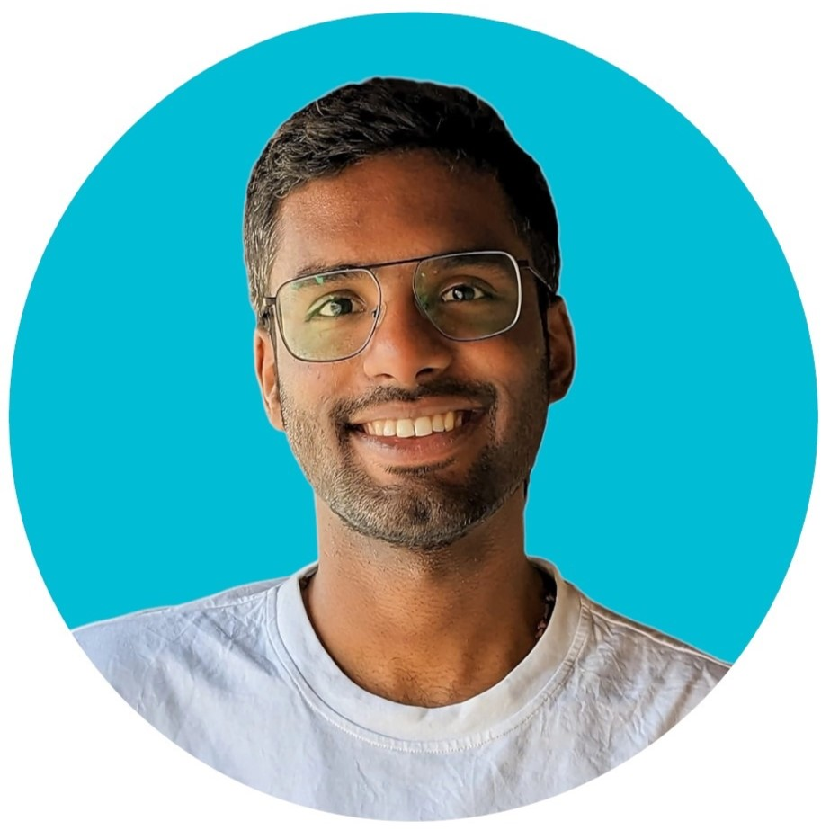

Alan Thayil
Computational Engineer
Email: alanmike1995@gmail.com
Portfolio
Education
Friedrich Alexander University (FAU), Germany
M.Sc. Computational Engineering, GPA 3.1
Cochin University of Science and Technology, India
B. Tech. Electrical and Electronics Engineering, GPA 2.3
Professional Experiences
Team Member
Robotics Erlangen, Robotics Soccer Club in FAU
June 2023 - Present
- Robot Path Planning, Navigation and Control
- Gaining knoweldge in the field of Robotics by collaborating with a passionate student community from various disciplines.
Software Developer
Link IT isi, Germany
March 2022 - Present
- Led the development of a dynamic and scalable test automation framework which reduced the testing time by 60%.
- Implemented Behaviour Data Driven (BDD) Framework and Page Object Model (POM) for streamlining testing process.
Test Engineer
Infosys, India
December 2018 - September 2021
- Engineered Automated Solutions for API testing.
- Collaborated with cross functional teams including stakeholders, Business Analysts, Product Owners and Developers ensuring on-time product delivery.
Electric Vehicle, Student Intern
Birla Institute of Technology and Science, India
December 2017 - January 2018
- Gained experience in working with MATLAB.
- Won Gold Medal for the Best Team Design of a Hybrid Electric Vehicle.